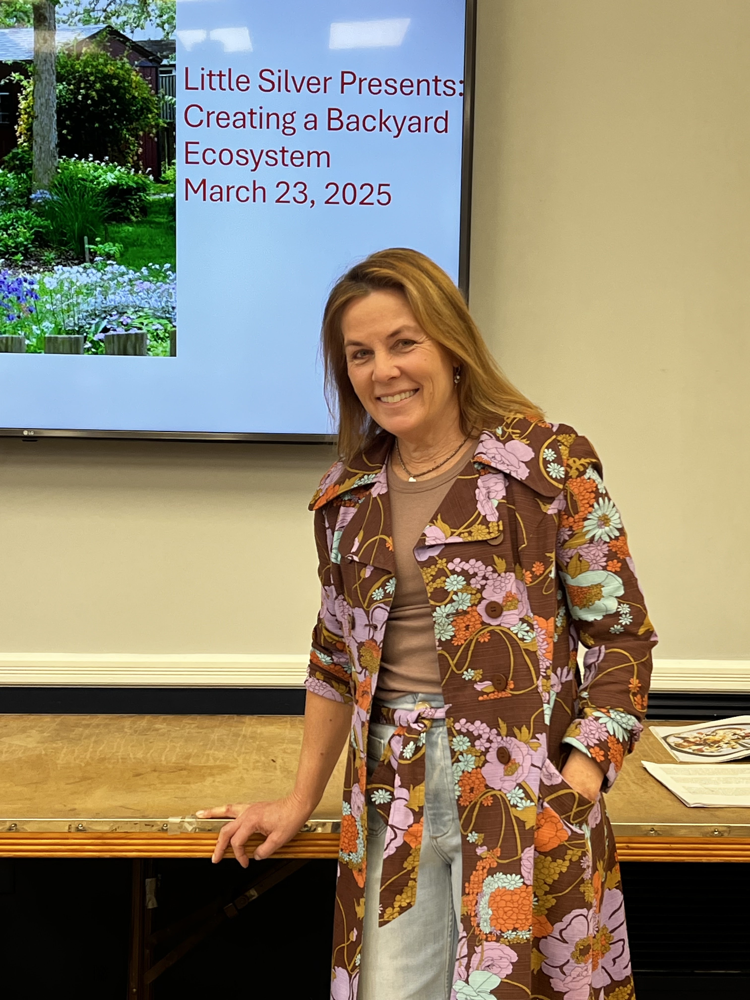
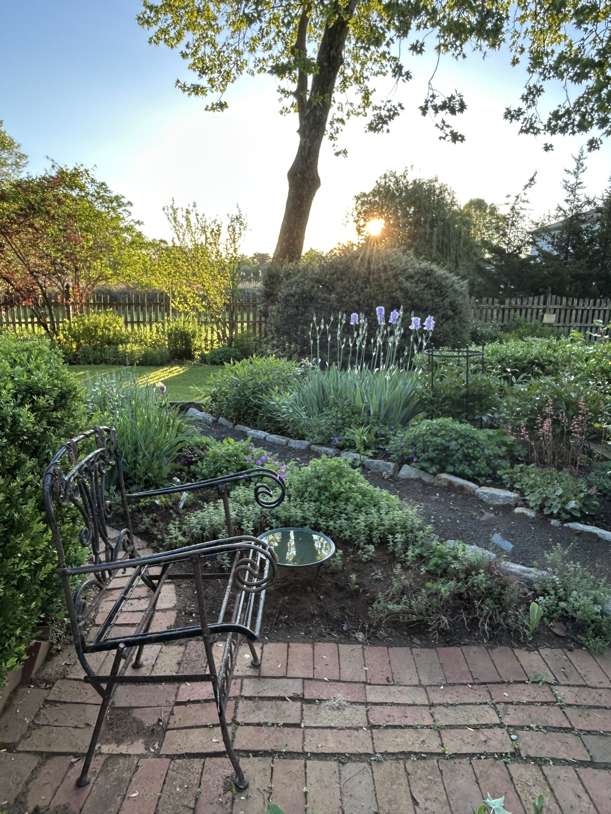

About Me

I'm the gardener behind Native Haven Gardens. My passion lies in helping people to transform their outdoor spaces into vibrant ecosystems that support local pollinators and wildlife, while creating a peaceful and beautiful retreat for you to enjoy.
After a long professional career in book publishing I am thrilled to turn my full attention to my lifelong passion. I have always tended gardens - whether in my backyard, or for friends and family members. I cannot walk by a garden without digging my hands into the soil to pull a weed or try to identify a plant.
My hands-on experience is enhanced by professional seminars, courses in design and horticulture and countless hours developing and maintaining gardens.
My work with the Monmouth County chapter of the Native Plants Society of NJ includes frequent speaking engagements, and volunteer projects at public and private gardens and natural areas.
I focus on native plants and sustainable gardening practices. I like to educate clients about the plants they have and how to improve their yards by removing any invasive plants and replacing them with something that will attract wildlife. As more and more habitat is turned over to development in our area, it’s important that our yards provide food and shelter for birds, insects and mammals. These spaces are vital for wildlife and can provide great joy and tranquility for the humans that live there too!
A resident of Monmouth County for more than twenty years, I maintain a one-acre lot with multiple eco-regions and unique gardens. Just as plants are constantly changing so too have my gardens, including an important shift toward native plants.
My passion is spreading the joy of gardening combined with its necessity to support and sustain wildlife. The choices we make in our own yards matter and it is empowering to beautify a yard, but also make it a better yard.
Services
Whether you wish to transform an existing garden, create a new one, or just need advice on taking care of what you have, we can work together to build outdoor havens to enjoy for years to come.
If you look outside your window and don't like what you see, or think it could be better, let’s work on a plan to transform that space into something you’ll enjoy all year round. Each season has something to enjoy and a good garden can be of interest even in winter.
- Design service to transform spaces
- Coaching on best sustainable practices and plant care
- Garden restoration and maintenance including routine clean up, weeding, and pruning.
- Staging annuals for constant color and pop
- Seasonal containers
